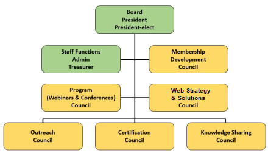

Governance of the Society of Decision Professionals
Board of Directors and Councils
SDP
is guided by an elected Board of Directors and six Councils. SDP
members are encouraged to participate in at least one Council, sharing
insights, knowledge, and experience. Council participation is important
to SDP's organizational growth, effectiveness, and visibility.

Bylaws of the Society of Decision Professionals
View SDP Board of Directors Biographies
The Board of Directors
- Governs the organization by establishing broad policies and objectives
- Selects, appoints, supports and reviews the performance of the executive staff
- Ensures the availability of adequate financial resources
- Approves annual budgets
- Accountable to the members for SDP's performance
SDP Councils:
Membership Council
- Manages outreach programs to grow the member base for the society
- Relates the concerns and aspirations of the members to the organization
Program Council
- Proposes and develops the calendar of programs for the society
- Oversees the organization of the major events
- Works with other Councils on scheduling of meetings and topics
Web Strategy & Solutions Council
- Oversees website development
- Engages contractors and volunteers to develop additional functionality
- Assists other Councils to make the website effective for all functions of the society
- Grows the content available on the portal
- Promotes user generated content on the portal
- Council Home Page (for council members only)
Outreach Council
- Creates and gathers publicity and promotion materials for the use of members
- Encourages members to engage in PR activities to promote the profession
- Organizes PR events around the profession
- Sets up a speaker bureau
- Engages with partner organizations that support the needs of Decision Makers
Certification Council
- Develops and maintains the qualifications descriptions embodied in the career ladder
- Develops and oversees the certification process for the levels of membership
- Resolves conflicts about malpractice
Knowledge Sharing Council
- Gathers DA insights and best practices
- Promotes the culture of sharing and attribution
- Assists in growing the knowledge content available on the portal
- Creates
actual and virtual forums that facilitate the sharing of best
practices—virtual forums consist of blogs, databases, and social
networks;
- Assure consistency of forum formats and design, and coordinates forum topics that overlap.
Click here to participate on the Board or a Council
|